Ondulatória, Acústica e Óptica (9º ano)
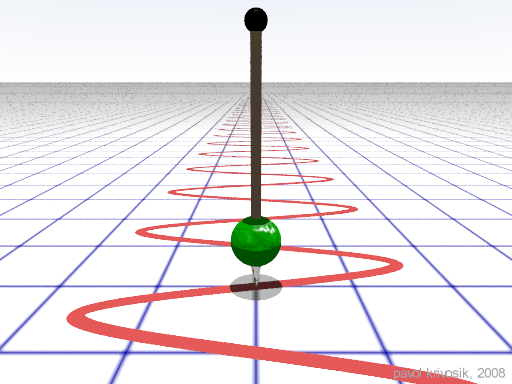
Exemplo 1
Uma corda de violão vibra rapidamente e completa uma oscilação inteira em apenas 0,05 segundos. Qual é a sua frequência?
Resolução:
f = 1 / T
f = 1 / 0,05
f = 20 Hz
Exemplo 2
As asas de uma abelha batem tão rápido que completam um movimento de ida e volta em exatos 0,01 segundos. Qual é a frequência do bater de asas da abelha?
Resolução:
f = 1 / T
f = 1 / 0,01
f = 100 Hz
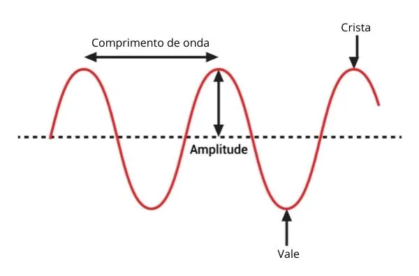
Exemplo 1
Uma onda no mar tem uma distância entre cristas (comprimento de onda, λ) de 2 metros e bate no píer com uma frequência de 5 Hz. Qual a sua velocidade de propagação?
Resolução:
V = λ . f
V = 2 . 5
V = 10 m/s
Exemplo 2
Uma onda sonora grave se propaga num teatro com comprimento de onda de 0,5 metros. Sabendo que a fonte vibrou a 680 Hz, qual foi a velocidade atingida?
Resolução:
V = λ . f
V = 0,5 . 680
V = 340 m/s
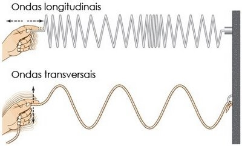
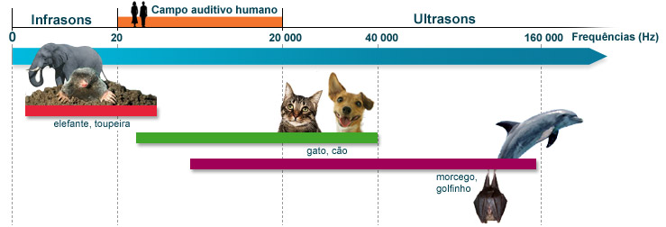
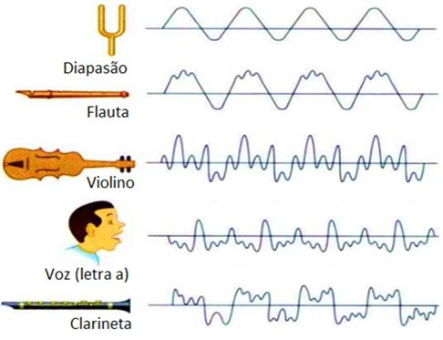
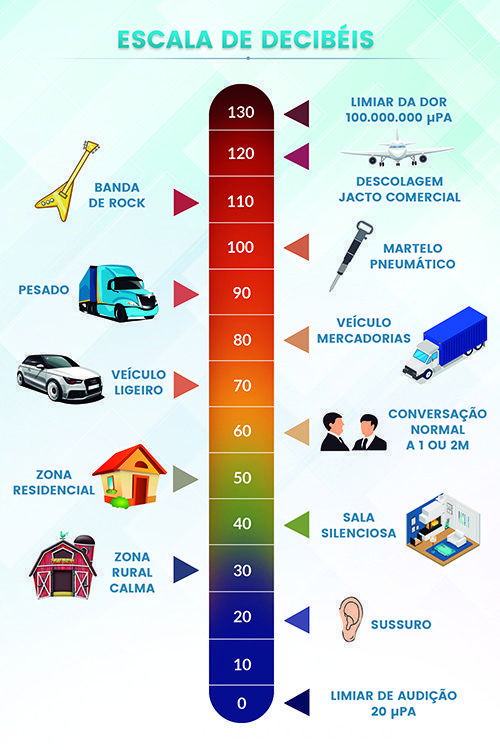
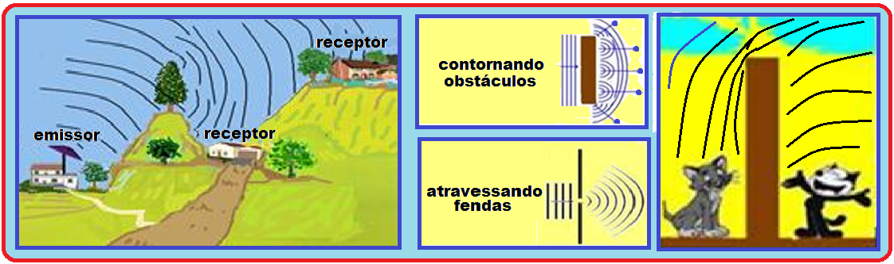
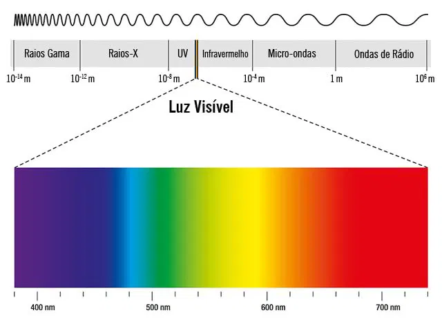
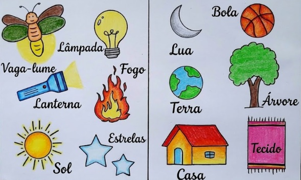
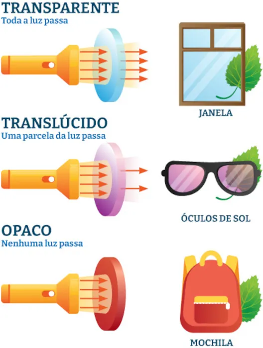
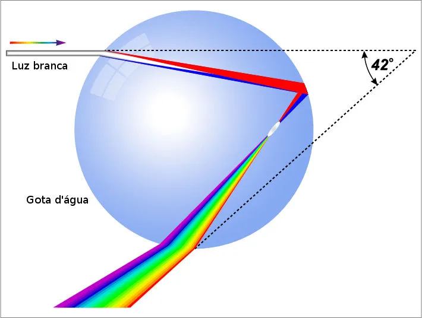
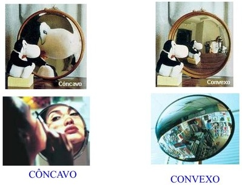
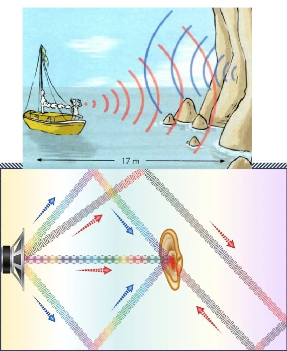
Boa sorte nas atividades e nos estudos.